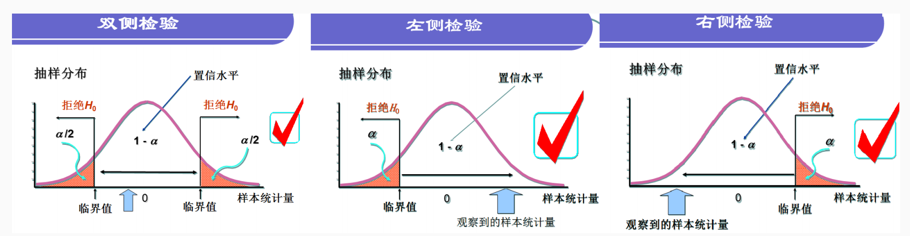

12 假设检验
12.1 假设检验原理
实际中，只能得到抽取样本的统计结果（即只能得到总体的部分样本的统计量），想要进一步推断总体的特征，必然会产生错误，那么犯错的概率为多少时可以接受这种推断呢？
为此，统计学家基于小概率反证法思想开发了假设检验这一统计方法。
所谓小概率反证法思想，是指小概率事件（发生的概率P<0.01或P<0.05）在一次试验中基本上不会发生。具体来说，反证法思想是先提出假设（一般称之为原假设，记为H0），再用适当的统计方法确定假设成立的可能性大小。若可能性小，则认为这个原假设不成立；若可能性大，则不认为原假设不成立。
假设检验的基本逻辑是：如果原假设为真，则检验统计量（样本数据的函数）将服从某种概率分布。
具体来说：
先提出原假设（也称为零假设），接着在原假设为真的前提下，基于样本数据计算出检验统计量值，与统计学家建立的这些统计量应服从的概率分布进行对比，就可以知道在百分之多少（P值1）的机遇下会得到目前的结果。
若经比较后发现，出现该结果的概率（P值）很小，即原假设（零假设）是基本不会发生的小概率事件，则应拒绝原假设，
Tip
原假设与备选假设：
原假设()：研究者想收集证据予以反对的假设。
备选假设()：研究者想手机证据予以支持的假设。
假设检验的判断方法有两种：P执法和临界值法。
以t检验为例
双侧检验：
- 在原假设下，根据样本数据计算出t统计量
- ，表示的双侧尾部的面积。
- 若(在双尾部分)，则在0.05显著水平下拒绝原假设。
Warning
待续
假设检验的P值，是在为真时根据检验统计量服从的理论概率分布计算的，衡量的是在原假设下出现当前观测结果可能性的大小。↩︎